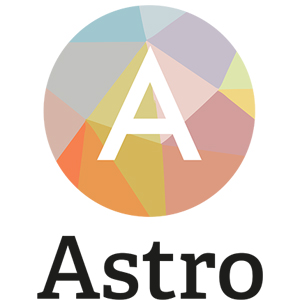
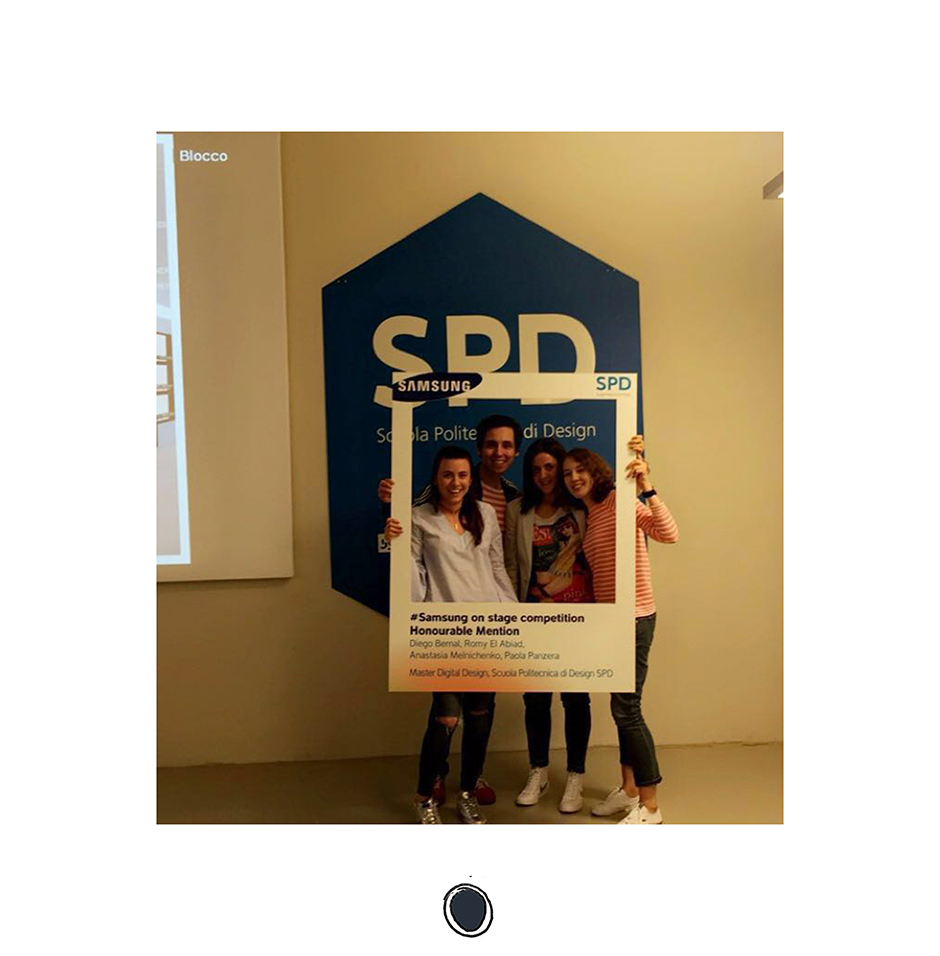

Teachers: Carlo Meo, Massimiliano Mauro
Team: Diego Bernal, Romy El Abiad, Anastasia Melnichencko, P.P.
Group project: in collaboration with Samsung
Goal: Give to customer the best experience in the purchase of Samsung products inside and outside the store.
Description:
The starting point is to analyze the consumer behavior and customer needs to improve the experience in terms of quality and interaction between the service provider and the consumer.
Creation of an app: ASTRO.
Astro is an artifical intelligence designed to make the process of selecting the product best suited for the customer and then using it.
It uses a visual interface and the customer communicates with it by multiple choice answers.
Astro becomes one of 4 personalities. It use its questions in different ways depending on the personality it is.
Personality types:
CHEERFUL/CURIOS
Positive about things, open to new information, easily entertained, predisposed to talking and likes answering questions.
SARCASTIC / RATIONAL
Wants to get straight to the point, doesn’t like distractions, want less questions and more information.
AUTHORITATIVE / HIGHBROW
Convinced he is better / smarter than others, treats others in a patronising way.
DRAMATIC / ARTISTIC
Emotional and easily excitable, likes metaphores and comparisons.
When the customer is selecting a product in the store, Astro asks questions and selects the product best suited for the customer’s needs.
Out of store Astro explains how to install and use the product.
Benefits:
For Samsung:
Samsung has a very large range of products, it can be confusing for the customer. Astro makes the process of selecting and using Samsung products easy and entertaining.
For the Customer:
when the customer wants to buy a Samsung product, they are no longer overwhelmed by the large variety of products. The customer has an adviser they can rely on and turn to at any time if they have a question.
and the winner is...
